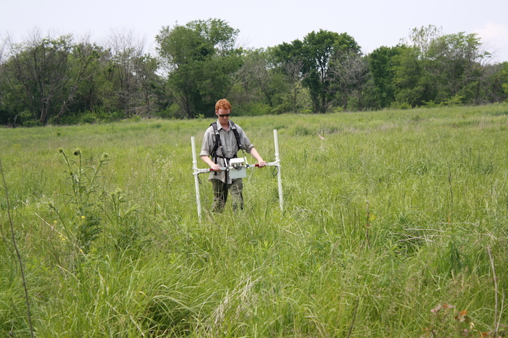

{kind=link}
{kind=link}
{kind=link}


contact us
Questions? Comments? Please Contact Us!
Michigan State Univeristy
Department of Anthropology
355 Baker Hall
East Lansing, MI 48824
@MortonVillage
Magnetometry measures and maps the patterns of magnetism in the soil. Prehistoric activity, such as cooking over a hearth or a structure burning, changes the magnetic properties of the soil, which can be detected using proper equipment. The images that are produced by a magnetometry survey gives archaeologists a picture of subsurface activity, revealing possible activity areas. Any possible anomalies are then ground-truthed, aka examined through archaeological test excavations. This is done to verify what is seen through the magnetometry survey actually exists below ground.
Looking at the Magnetometry layer on the Map, you are able to see dark squares which appear to be possible house structures. When you compare them to the known locations of excavated structures, you can see that their placement corresponds. These maps can be used to guide future archaeological excavations.